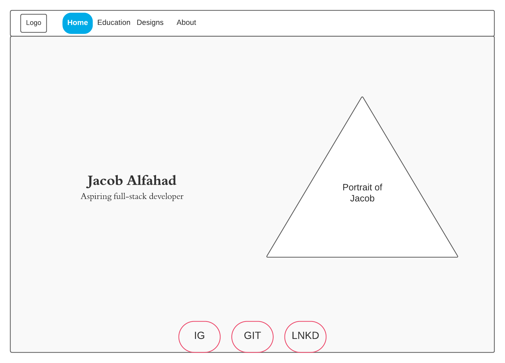
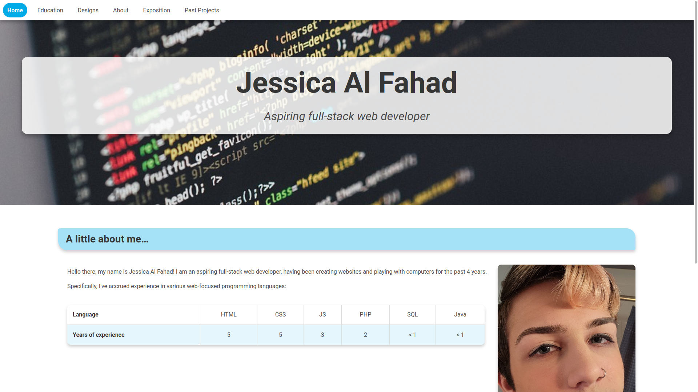

For my final project in my first web class, I decided to go for a material design; this style is typically composed of lots of shadows, whitespace and a generally clean aesthetic that seems to pop out of the page.
It is also a method of designing websites that goes well with animated and interactable elements.
For functionality, I used Font Awesome (for various icons) and Bulma (for CSS).
The pastel color palette I chose goes hand-in-hand with the design to help bring bright contrast, particularly to large or important elements, such as the navbar links, headers and footer links.
Adding the transition property to many of the animated elements in my page help add a certain elegance to user interactions.

